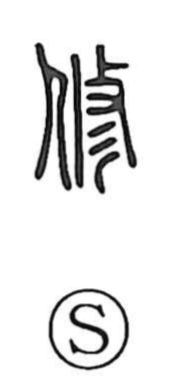

修

Uncategorized
Kun: osameru, osamaru | On: shuu, shu
to repair ・ to cultivate ・ to master ・ to discipline ・ to purify
Explanation
Shirakawa interprets 修 as a compound of 攸 and 彡. The graph 攸 depicts water being poured over a person’s back, evoking ritual ablution—an act that purifies the body and calms the heart. The addition of 彡 functions as a sign marking what has been refined and made clean. From this image of purification and refinement, 修 comes to mean purifying and putting oneself in order, correcting and regulating one’s conduct, and by extension studying to master skills and repairing or making things right.